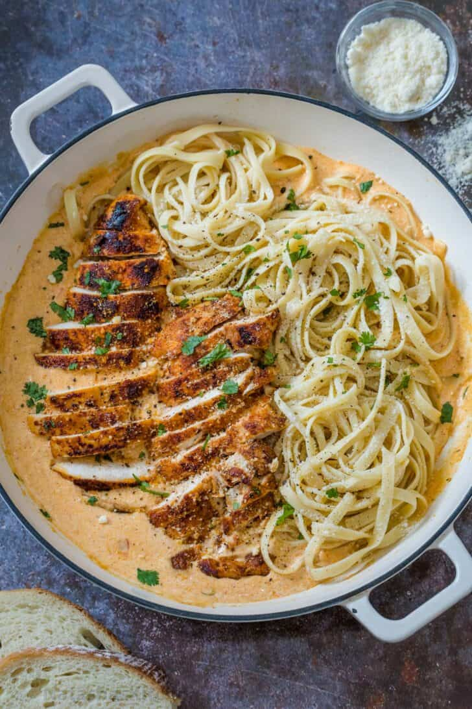

Chicken pasta

Description
Try this when you are feeling daring and want to mix things up a bit!
A Southern inspired recipe that is sure to add a little fun to your dinner
table. Try serving it with corn bread.
Chicken pasta Ingredients
- 4 ounces linguine pasta/li>
- 2 boneless, skinless chicken breast halves, sliced into thin strips
- 2 teaspoons Cajun seasoning
- 2 tablespoons butter
- 1 green bell pepper, chopped
- ½ red bell pepper, chopped
- 4 fresh mushrooms, sliced
- 1 green onion, minced
- 1 ½ cups heavy cream
- ¼ teaspoon dried basil
- ¼ teaspoon lemon pepper
- 1 teaspoon salt
- ⅛ teaspoon garlic powder
- ⅛ teaspoon ground black pepper
- 2 tablespoons grated Parmesan cheese
Steps
- Bring a large pot of lightly salted water to a boil. Add linguini pasta, and cook for 8
to 10 minutes, or until al dente; drain.
- Meanwhile, place chicken and Cajun seasoning in a bowl, and toss to coat.
- In a large skillet over medium heat, saute chicken in butter until no longer pink and
juices run clear, about 5 to 7 minutes. Add green and red bell peppers, sliced mushrooms
and green onions; cook for 2 to 3 minutes. Reduce heat, and stir in heavy cream. Season
the sauce with basil, lemon pepper, salt, garlic powder and ground black pepper,
and heat through.
- In a large bowl, toss linguini with sauce. Sprinkle with grated Parmesan cheese.